1、准备一个符合要求的图片组图片数据。

2、在变量属性栏设置本属性即可，设置后就可以在添加子夹时设置图标索引参数，图标索引从0开始。
作者：创世魂
● 概述
选择夹是一种多页面容器，可以通过点击选择夹标题进行页面切换，其效果如下：
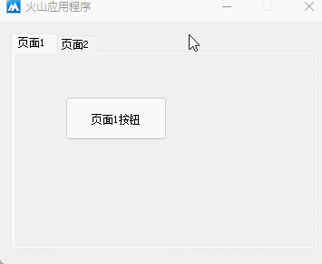
● 添加子夹
帮助文档如下图：
本方法共有四个参数。
参数1：提供子夹标题，不想要标题可提供空文本。
参数2：提供子夹图标索引，如果设置了“图片组”属性，则可通过本属性设置图标索引。
参数3：提供子夹内容组件，在火山中使用组件布局器即可。
参数4：设置子夹内容位置，调用方式为“子夹内容位置.XX”。
添加成功返回子夹索引，否则返回-1。
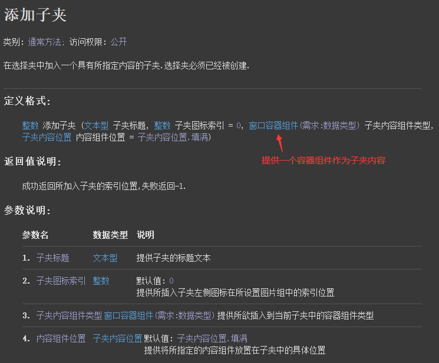
流程如下：
1、定义基础类为“组件布局器”的类，并右键打开设计器。
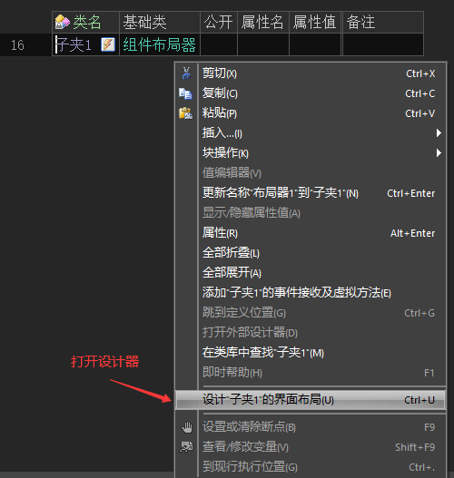
2、根据需求设置布局内容。
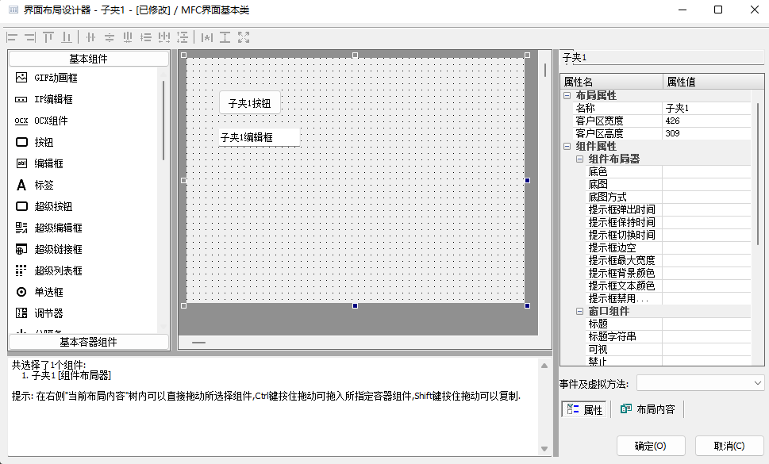
3、根据实际需求设计多个布局器。
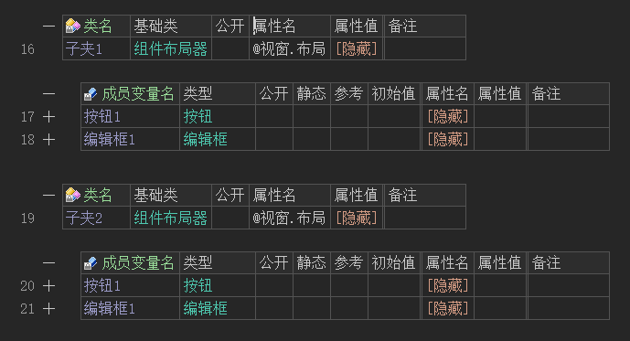
4、最后就可以调用“添加子夹()”方法进行子夹添加。
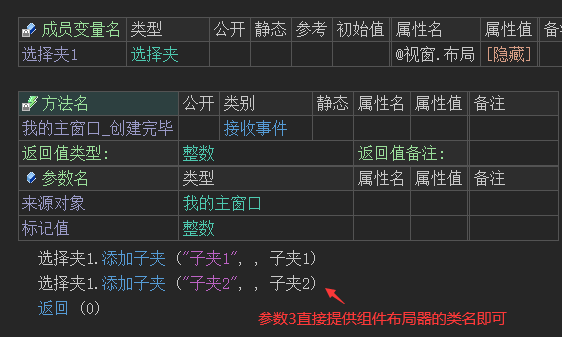
运行效果如下图：
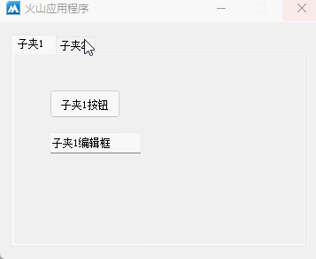
● 插入子夹
帮助文档如下图：
本方法和“添加子夹()”方法相比只是多了一个“插入索引位置”的参数。
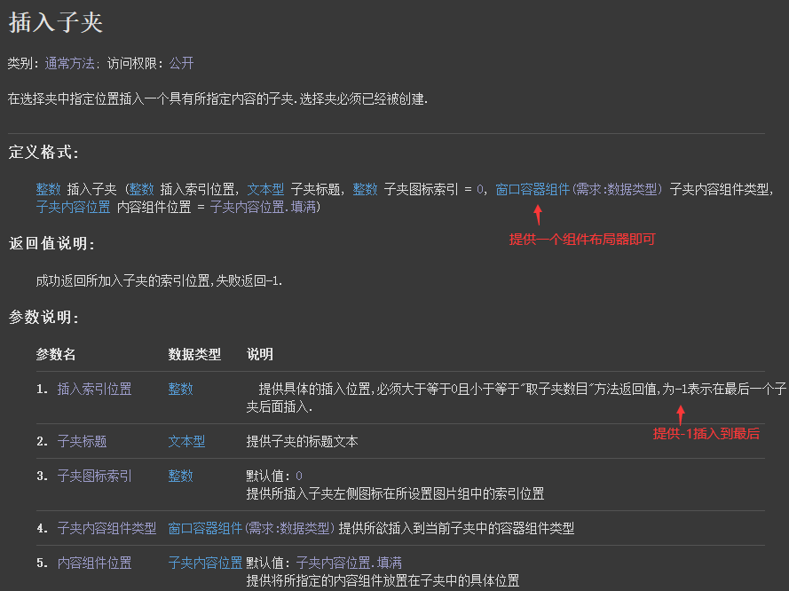
代码编写如下图：
设计一个要插入的子夹，按钮点击后将其插入到选择夹首部。
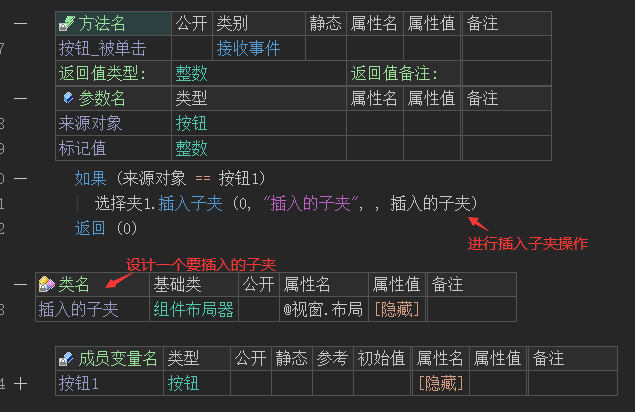
运行效果如下图：
最终选择夹首部被插入了一个子夹。
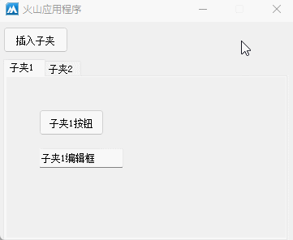
● 置子夹名称
帮助文档如下图：
顾名思义，用于设置指定子夹的名称，本方法共有两个参数。
参数1：提供子夹索引，从0开始。
参数2：提供要修改的新名称。
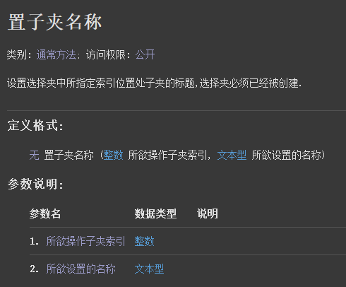
代码编写如下图：
按钮点击后修改第一个子夹的名称。
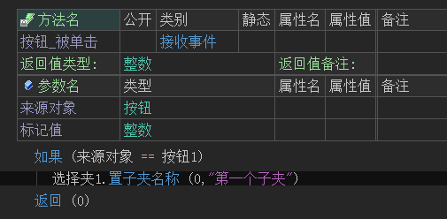
运行效果如下图：
最终子夹名称将被修改。
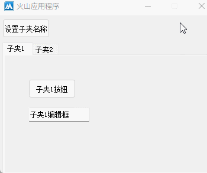
● 取子夹名称
帮助文档如下图：
顾名思义，用于取出指定子夹的名称。
本方法只有一个参数，提供要取出子夹名称的索引即可。
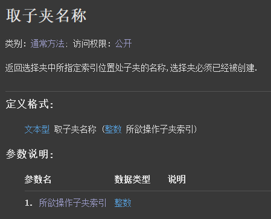
代码编写如下图：
按钮点击后取出首个子夹标题显示在信息框中。
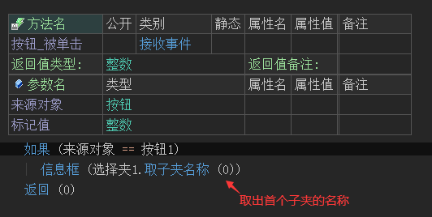
运行效果如下图：
最终子夹标题被取出。
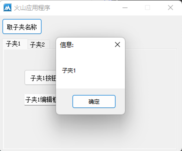
● 删除子夹
帮助文档如下图：
顾名思义，用于删除某个子夹，子夹索引从0开始。
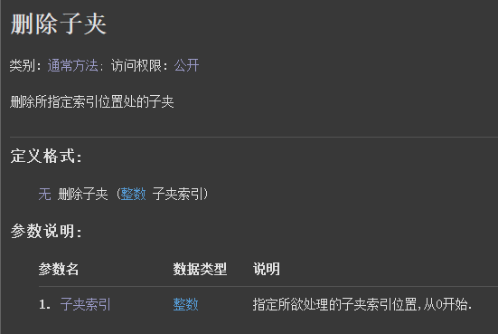
代码编写如下图：
按钮点击后删除首个子夹。
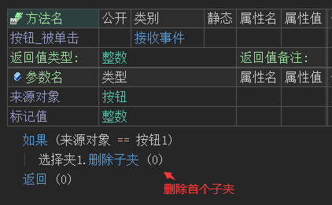
运行效果如下图：
最终首个子夹被删除。
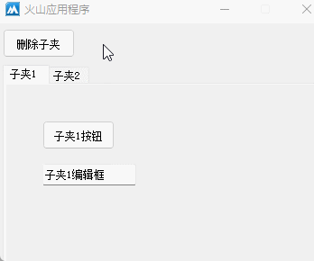
● 删除所有子夹
帮助文档如下图：
顾名思义用于删除所有子夹包括其内容。
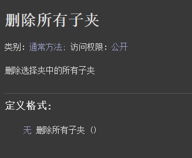
代码编写如下图：
直接调用本方法即可删除。
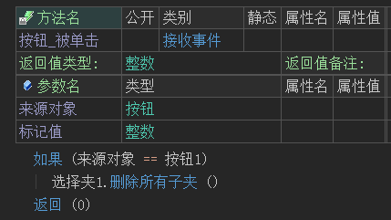
运行效果如下图：
最终所有子夹被删除。
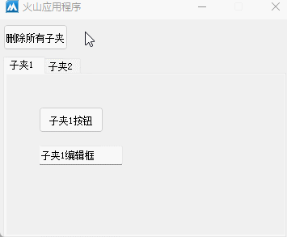
● 取子夹数目
帮助文档如下图：
通过本方法可以返回所有子夹数量。
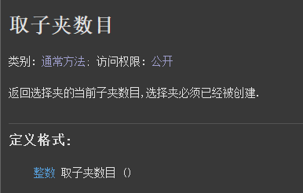
代码编写如下图：
利用“逆向计次循环”结合当前方法实现删除所有子夹功能。
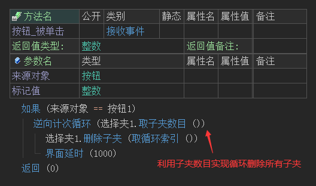
运行效果如下图：
最终所有子夹将被删除。
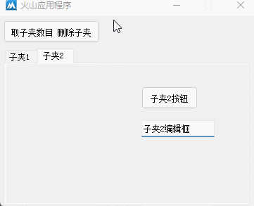
● 取子夹标签位置
“取子夹标签位置”帮助文档如下图：
用于取出子夹标签位置，通过此位置信息可以实现在选择夹上添加关闭按钮的效果。
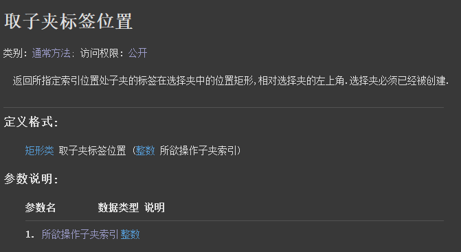
“子夹被改变(事)”帮助文档如下图：
当子夹被改变后将触发本事件，如果想要子夹改变后处理某些任务可以在此事件下操作。
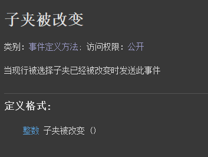
利用以上方法和事件实现一个关闭子夹按钮：
1、打开界面设计器放置一个图形按钮，设置图标后并将组件隐藏。
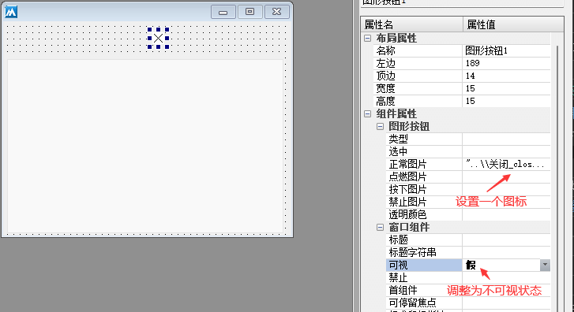
2、添加“子夹被改变”事件，处理图形按钮位置。
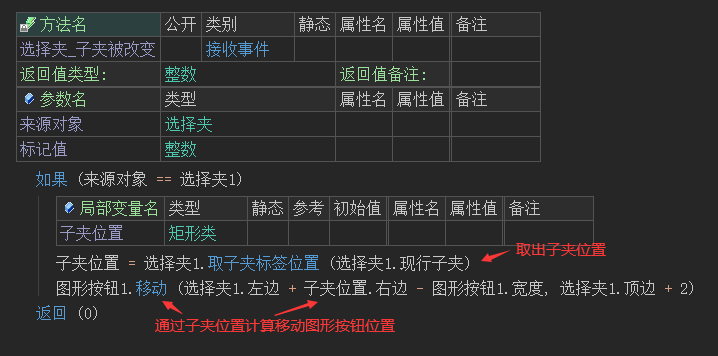
3、添加子夹后，调用一下子夹事件处理图形按钮位置，同时将图形按钮可视。
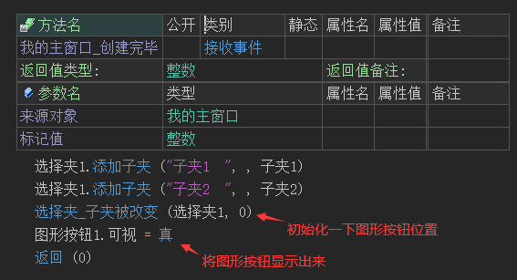
4、添加图形按钮被单击事件，用于处理删除子夹操作。
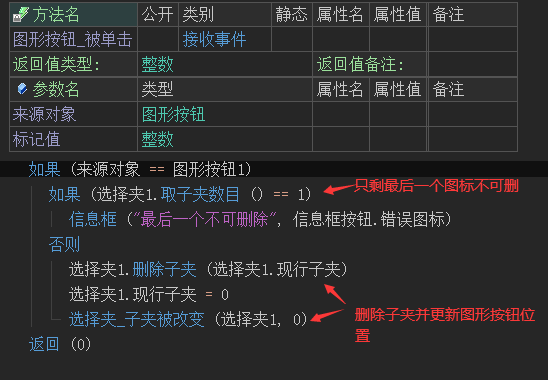
运行效果如下图：
最终关闭按钮可以正常的在子夹上显示，同时也可以实现关闭子夹效果。
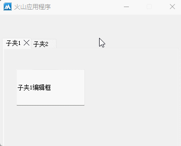
● 计算调整尺寸
帮助文档如下图：
将选择夹内容区的尺寸填入参数中就可以计算出最合适的选择夹尺寸。
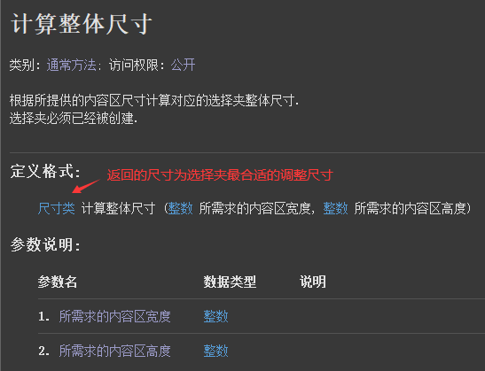
代码编写如下图：
假如内容区域尺寸为200*200，将其填入参数后返回的尺寸类对象就是最合适的选择夹尺寸。
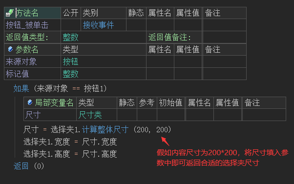
运行效果如下图：
最终选择夹尺寸被调整到了合适的位置。
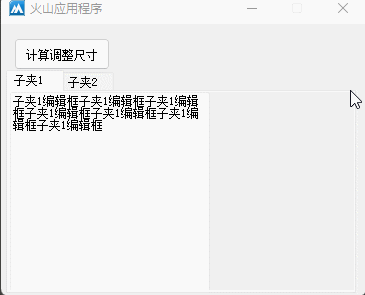
● 置子夹图标索引
帮助文档如下图：
当设置“图片组”或“图片组文件”属性后，就可以通过本方法来修改子夹的图标索引，本方法共有两个参数。
参数1：用于提供子夹索引，从0开始。
参数2：用于提供图标索引，从0开始。
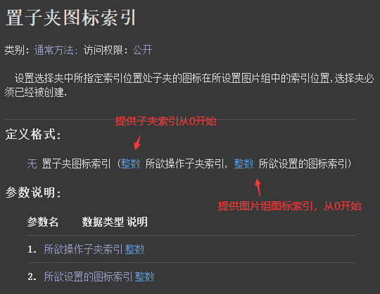
代码编写如下图：
修改子夹1的图标索引为1。
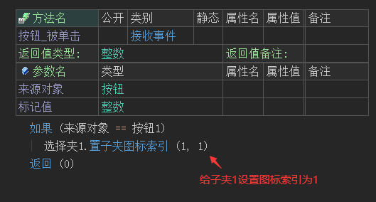
运行效果如下图：
最终子夹图标被修改。
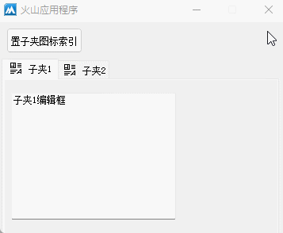
● 取子夹内容组件
帮助文档如下图：
通过本方法可以取出子夹内容，从而用于选择夹组件之间的交互，本方法共有两个参数。
参数1：提供子夹索引，子夹必须保证已经创建。
参数2：提供子夹容器的变量即可。
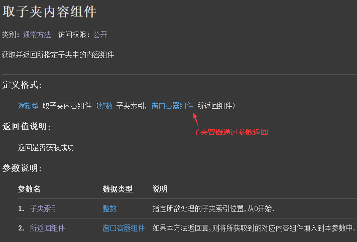
操作流程如下：
1、公开需要操作的子夹组件，便于后续访问操作。
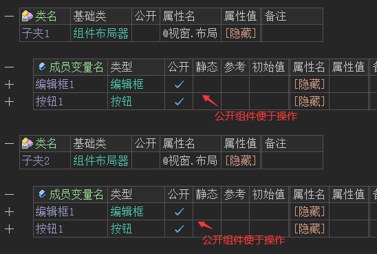
2、定义子夹布局器变量。
3、调用“取子夹内容组件()”方法，取出子夹布局。
4、挂接子夹中的按钮事件。
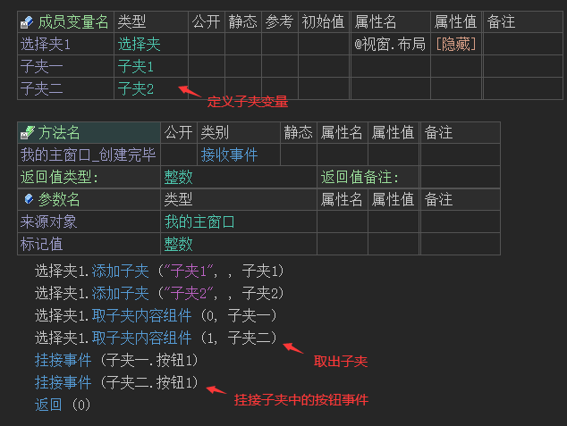
5、最后添加按钮事件，判断来源对象后通过布局器变量修改子夹中的组件内容。
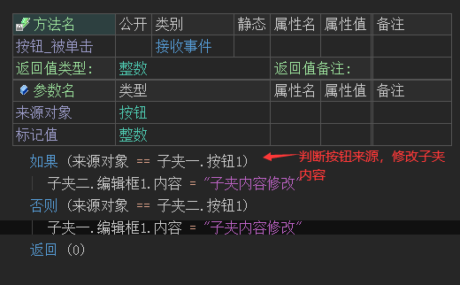
运行效果如下图：
最终实现选择夹组件之间的交互。
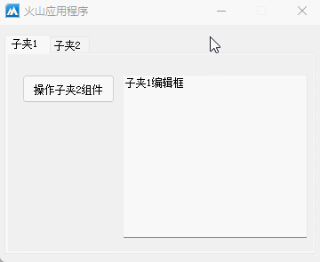
● 取子夹内容组件参考
帮助文档如下图：
本方法和“取子夹内容组件”类似，不同之处为本方法可以直接返回子夹内容，可直接用于挂接子夹内组件事件。
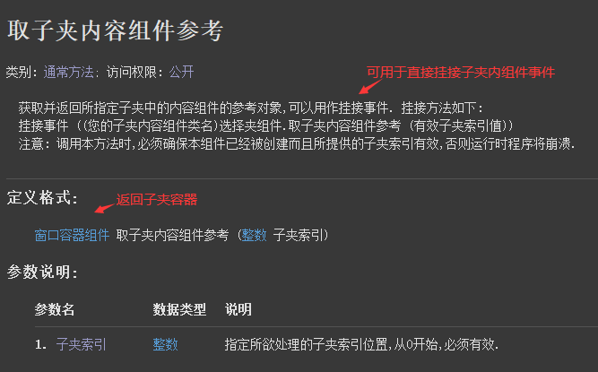
代码编写如下图：
1、在添加子夹后就可以调用本方法，经过强制转换后就可以访问到子夹内组件，进行挂接事件操作。
2、注意在进行按钮单击后，只能通过“标记值”来判断按钮来源，不能通过“来源对象”参数判断。
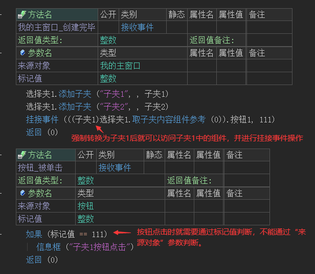
运行效果如下图：
最终按钮事件成功触发。
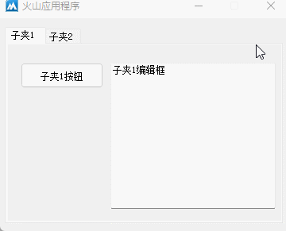
● 允许多行表头(写)
帮助文档如下图：
当子夹过多时，通过本属性可设置表头自动折行。
注：本属性设置时机为“组件创建前”表示只能在变量的属性表中调用。
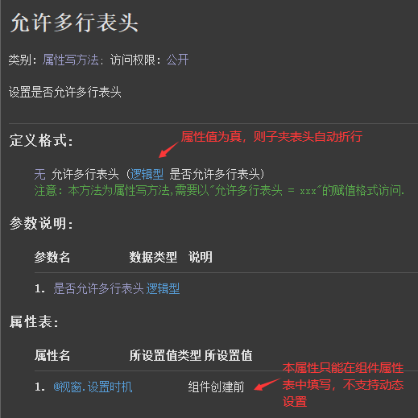
代码编写如下图：
1、在选择夹变量的属性表中，将本属性设置为真。
2、在窗口创建后添加10个子夹。
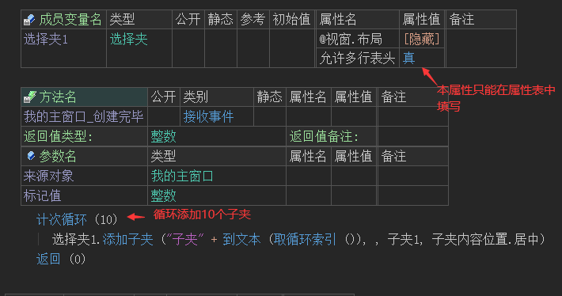
运行效果如下图：
左图：属性设置为真的效果。
右图：属性设置为假的效果。
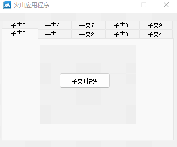
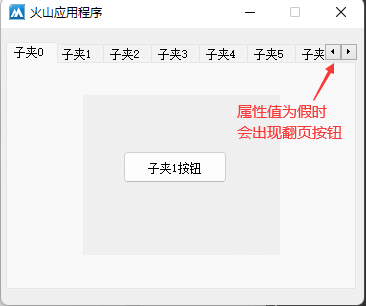
● 现行子夹(读写)
帮助文档如下图：
本属性用于设置当前显示的子夹，从0开始。
同名读属性可用于判断当前显示的子夹索引。
代码编写如下图：
利用本属性可以制作一个切换首页的功能，判断当前子夹是否为首页，如果不为首页则切换到首页。
运行效果如下图：
最终按钮点击后可以切换到首页显示内容。
● 表头方向(写)
帮助文档如下图：
本方法可用于设置表头显示的方向。
注：本属性的设置时机为“组件创建前”只能用于变量属性表中，不支持动态设置。
代码编写如下图：
本属性共有四个选项，通过点击按钮可选择。
运行效果如下图：
● 图片组(写)
以上两个属性都是用于设置图片组，不同之处为“图片组”的属性值为资源类型，“图片组文件”可提供文件路径。
此处介绍图片组属性的使用方式。
帮助文档如下图：
通过本属性可设置“图片组资源”类型的图片组数据。
代码编写如下图：
1、准备一个符合要求的图片组图片数据。
2、在变量属性栏设置本属性即可，设置后就可以在添加子夹时设置图标索引参数，图标索引从0开始。
运行效果如下图：
● 被单击(事件)
帮助文档如下图：
当子夹标题被单击时将触发本事件。
注：本事件只针对子夹标题，子夹内单击无效。
代码编写如下图：
添加本事件后弹出信息框演示。
运行效果如下图：
最终当单击子夹标题时，将会弹出信息框。